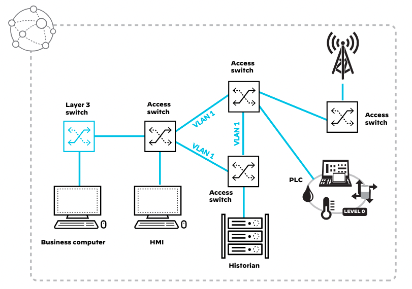
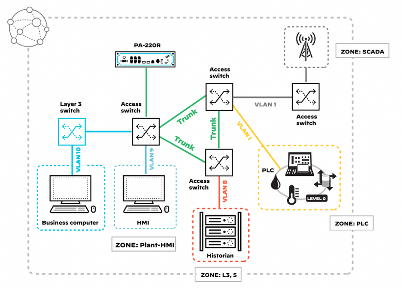
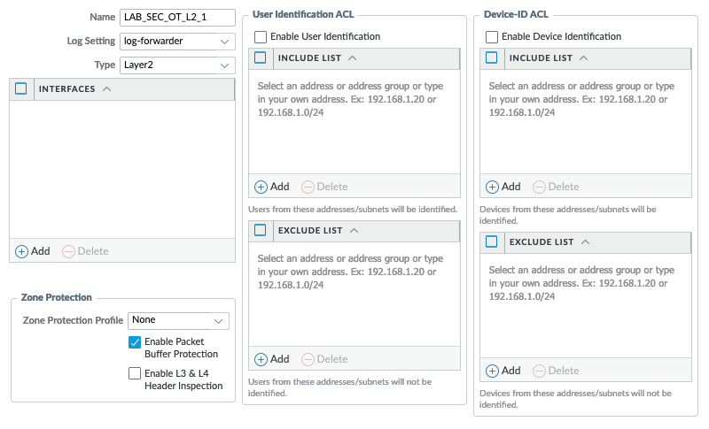
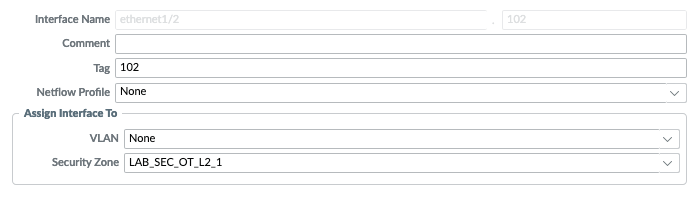
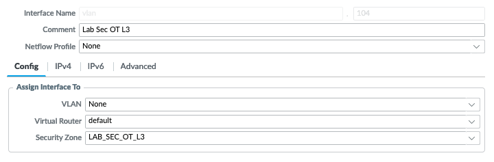
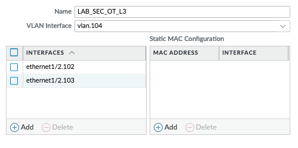
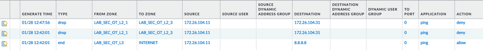
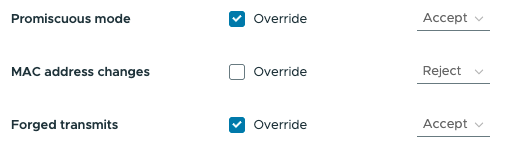

Industrial network segmentation with VLAN Insertion¶

In real-world industrial environments, it is common to have all OT/ICS devices configured with IP addresses belonging to a single large network. This setup allows different production lines or plants to potentially communicate without any filtering.
Additionally, user PCs are often part of the same network for various purposes. Unfortunately, these PCs are more susceptible to malware due to inconsistent adherence to corporate policies. A malware infection within an OT/ICS network can easily spread due to weak security defenses.

Our laboratory implements two different plants: the Bottle Filling Plant and the Oil Refinery Plant. In our setup, these two plants should not communicate with each other, even though they reside on the same IP network.
The goal is to segment the OT/ICS network transparently, minimizing disruptions.

Observations after VLAN insertion implementation:
- No IP address changes required
- Minimal downtime
- Increased network visibility
- Clear separation between IT and OT resources
- Ability to apply customized policies to different zones
- Capability for deep packet inspection on a per-zone basis
- Faster identification and isolation of potential issues
- Scalability up or down as needed
Grouping OT/ICS Devices Without Reconfiguration¶
Our laboratory includes the following devices:
| Plant | Role | Address | VLAN |
|---|---|---|---|
| Bottle Filling Plant | HMI | 172.26.104.11/24 | 104 |
| Bottle Filling Plant | PLC | 172.26.104.12/24 | 104 |
| Oil Refinery Plant | HMI | 172.26.104.21/24 | 104 |
| Oil Refinery Plant | PLC | 172.26.104.22/24 | 104 |
To segment the network transparently, we will deploy Palo Alto Networks firewalls configured with VLAN Insertion. This feature groups devices into specific VLANs and enforces communication policies between them.
After segmentation, the devices will be organized into two groups, each containing all necessary components for its respective plant:
| Plant | Role | Address | Group (VLAN) |
|---|---|---|---|
| Bottle Filling Plant | HMI | 172.26.104.11/24 | 102 |
| Bottle Filling Plant | PLC | 172.26.104.12/24 | 102 |
| Oil Refinery Plant | HMI | 172.26.104.21/24 | 103 |
| Oil Refinery Plant | PLC | 172.26.104.22/24 | 103 |
While it is technically possible to separate HMI and PLC devices into different groups with the firewall controlling their communication, this approach may not be feasible in a real-world setting, as OT managers typically prefer to keep HMI and PLC units in the same physical location without additional security layers in between.
Switch Configuration¶
Currently, all ICS/OT devices reside in VLAN 104. This VLAN will be retained for routing purposes while the devices are moved to their final VLANs without changing their IP addresses.
We create the necessary VLANs on the switch:
- VLAN 102:
LAB_SEC_OT_L2_1 - VLAN 103:
LAB_SEC_OT_L2_2
Additional requirements:
- Configure a loop prevention algorithm on the switches.
- Ensure the firewall is connected via a trunk port carrying VLANs 102 and 103.
Once all ICS/OT devices have been migrated and connectivity verified, VLAN 104 can be removed.
Firewall Configuration¶
We now enable VLAN Insertion on the firewall.
Step 1: Create security zones¶
Navigate to Network → Zones → Add and create the following zones:
LAB_SEC_OT_L2_1(Layer 2)LAB_SEC_OT_L2_2(Layer 2)

Step 2: Create subinterfaces¶
Each ICS/OT group is assigned a subinterface with:
- The correct VLAN tag
- The appropriate security zone
Navigate to Network → Interfaces → Add and create the subinterfaces.

Step 3: create VLAN interface¶
Navigate to Network → Interfaces → VLAN → Add and create a VLAN interface.

Step 4: Create VLAN Mapping¶
Navigate to: Network → VLANs → Add and associate the VLAN interface and subinterfaces.

This configuration maps network 172.24.106.0/24 onto VLANs 102 and 103, enforcing security policies accordingly.
Once all configurations are applied, policy rules committed, and devices moved to the correct VLANs, the segmentation process is complete.
Policy considerations¶
Policies uses L2 or L3 zones as following:
- Inter-VLAN communication: Source/destination is the Layer 3 zone assigned to the VLAN interface.
- Intra-VLAN communication: Source/destination is the Layer 2 zone assigned to the subinterfaces.

Virtual firewall considerations¶
If you are using a virtual device, keep in mind that the firewall behaves like a switch, manipulating incoming and outgoing frames. Therefore, the virtual network must be configured to allow:
- Promiscuous mode: to receive frames not specifically addressed to the firewall’s network interface.
- Forged transmit: to forward (transmit) frames originating from other devices.
